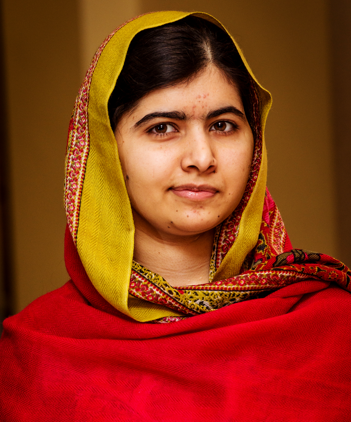
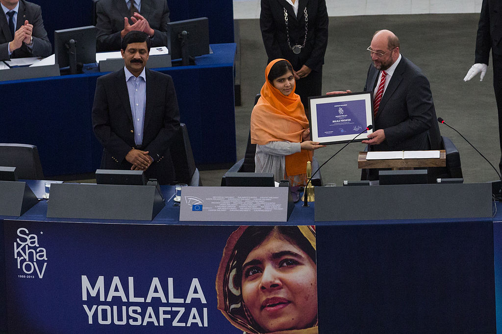

Malala Yousafzai

- Born:12july 1927(age 23) Mingora,Swat,Pakistan
- Nationality:Pakistan
- Citizenship:pakistan
- Education:Edgbaston High School
- Alma Matar:university of oxford(BA)
- Occupation:Activitist for female education formor blogger for BBC Urdu
- Employer:Malala Fund
- Known for: I am Malala, Malala Magic Pencil, Right to Education, female education
- Awards:2014 Nobel Peace Prize
childhood
Yousafzai was born on 12 July 1997 in the Swat District of Pakistan's northwestern Khyber Pakhtunkhwa province, into a lower-middle-class family.[21] She is the daughter of Ziauddin Yousafzai and Tor Pekai Yousafzai.[22] Her family is Sunni Muslim[4] of Pashtun ethnicity, belonging to the Yusufzai tribe.[23] The family did not have enough money for a hospital birth and as a result, Yousafzai was born at home with the help of neighbours.[24] She was given her first name Malala (meaning "grief-stricken")[25] after Malalai of Maiwand, a famous Pashtun poet and warrior woman from southern Afghanistan.[26] At her house in Mingora, she lived with her two younger brothers, Khushal and Atal, her parents, Ziauddin and Tor Pekai, and two pet Yousafzai's request, and a secondary school was renamed in her honour.[56] By 2012, Yousafzai was planning to organise the Malala Education Foundation, which would help poor girls go to school.[57] In 2012, Malala attended the International Marxist Tendency National Marxist Summer School.
Education Activism
Following the documentary, Yousafzai was interviewed on the national Pashto-language station AVT Khyber, the Urdu-language Daily Aaj, and Canada's Toronto Star. She made a second appearance on Capital Talk on 19 August 2009.[47] Her BBC blogging identity was being revealed in articles by December 2009.[48][49] She also began appearing on television to publicly advocate for female education.[35] From 2009 to 2010 she was the chair of the District Child Assembly of the Khpal Kor Foundation through 2009 and 2010.[50][51] In 2011 Yousafzai trained with local girls' empowerment organisation, Aware Girls, run by Gulalai Ismail whose training includes advice on women's rights and empowerment to peacefully oppose radicalisation through education. In October 2011, Archbishop Desmond Tutu, a South African activist, nominated Yousafzai for the International Children's Peace Prize of the Dutch international children's advocacy group KidsRights Foundation. She was the first Pakistani girl to be nominated for the award. The announcement said, "Malala dared to stand up for herself and other girls and used national and international media to let the world know girls should also have the right to go to school."The award was won by Michaela Mycroft of South Africa.
Nobel peace prize

On 10 October 2014, Yousafzai was announced as the co-recipient of the 2014 Nobel Peace Prize for her struggle against the suppression of children and young people and for the right of all children to education. Having received the prize at the age of 17, Yousafzai is the youngest Nobel laureate.[16][17][156] Yousafzai shared the prize with Kailash Satyarthi, a children's rights activist from India.[157] She is the second Pakistani to receive a Nobel Prize after 1979 Physics laureate Abdus Salam.[158] After she was awarded the Nobel Peace Prize, there was praise, but also some disapproval of the decision.[159][160] A Norwegian jurist, Fredrik Heffermehl, commented on being awarded the Nobel Prize: "This is not for fine people who have done nice things and are glad to receive it. All of that is irrelevant. What Nobel wanted was a prize that promoted global disarmament."[161] Adán Cortés, a college student from Mexico City and asylum seeker, interrupted Yousafzai's Nobel Peace Prize award ceremony in protest for the 2014 Iguala mass kidnapping in Mexico, but was quickly taken away by security personnel. Yousafzai later sympathised, and acknowledged that problems are faced by young people all over the world, saying "there are problems in Mexico, there are problems even in America, even here in Norway, and it is really important that children raise their voices.